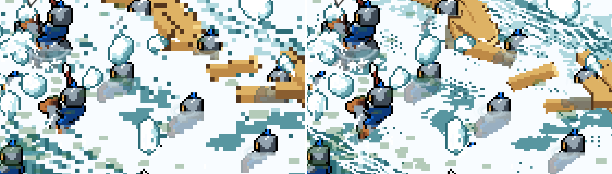
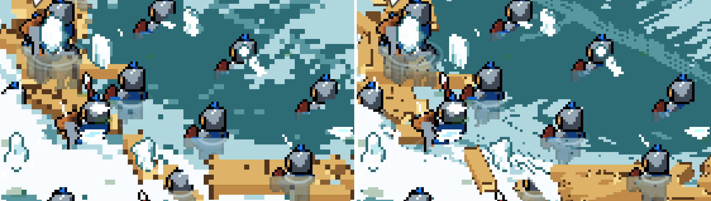
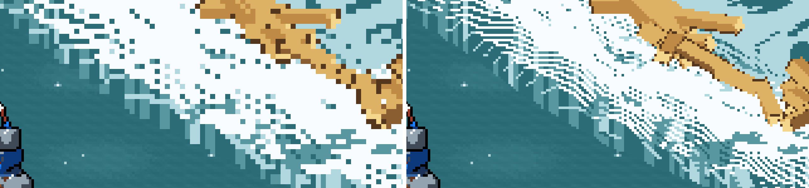
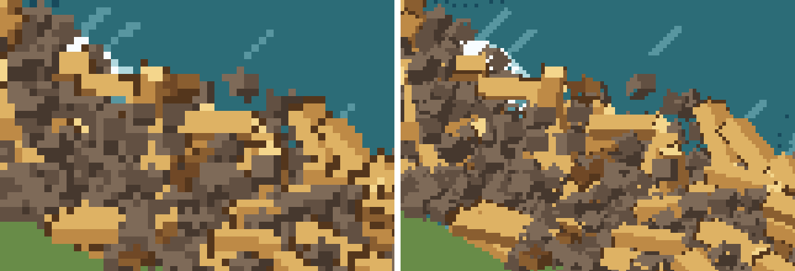
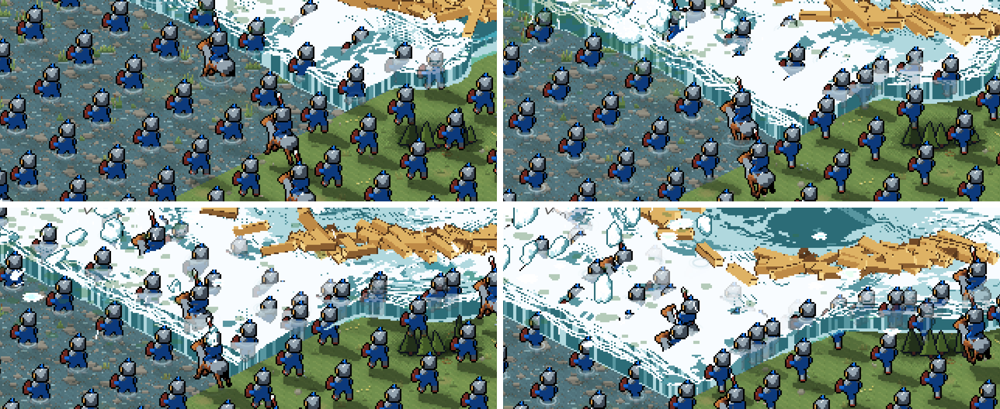
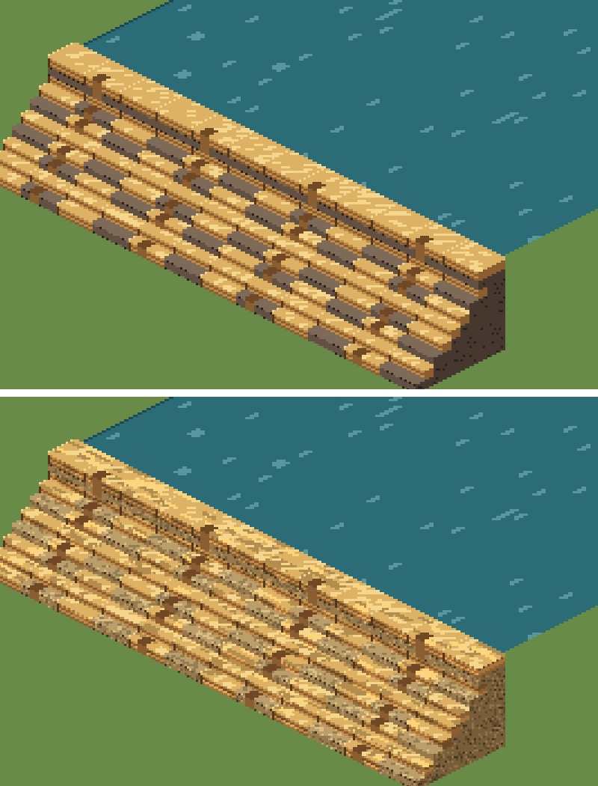
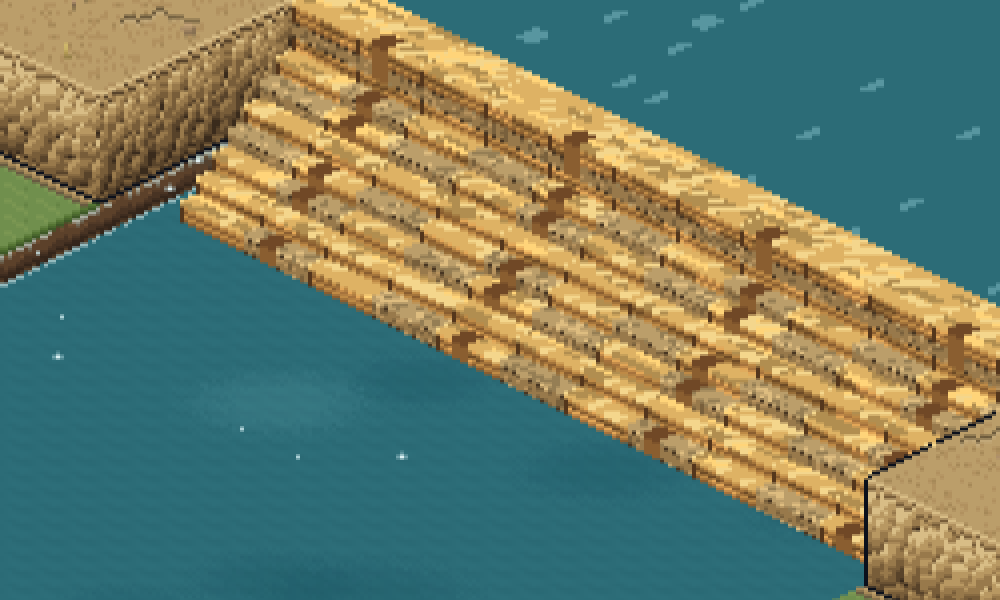
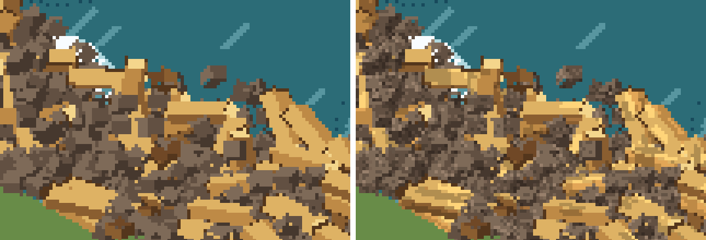

<title>수공 해상도 2배</title>
<meta name="claude:viewport-fit-sides" content="cover">
<link rel="stylesheet" href="https://fonts.googleapis.com/css2?family=Noto+Sans+KR:wght@400;500;700&family=IBM+Plex+Mono:wght@400;500&display=swap">
<style>
/* layout: a lab report. One column, comparison figures full width, figures and numbers before prose. */
:root{
  --bg:#f3f5f4; --card:#ffffff; --fg:#14201f; --mute:#5b6b69; --line:#d5dddb;
  --water:#1f6c78; --water-soft:#dcecee; --wood:#b57a2e; --ok:#2f7a4a; --warn:#a2561b;
  --sans:"Noto Sans KR",system-ui,-apple-system,"Apple SD Gothic Neo","Malgun Gothic",sans-serif;
  --mono:"IBM Plex Mono",ui-monospace,Menlo,monospace;
}
@media (prefers-color-scheme: dark){:root:not([data-theme="light"]){
  --bg:#0f1716; --card:#172321; --fg:#e4eeec; --mute:#93a6a3; --line:#2a3b39;
  --water:#6fc1cd; --water-soft:#1c3438; --wood:#e0a65a; --ok:#6cc68c; --warn:#e59a5f; color-scheme:dark}}
:root[data-theme="dark"]{
  --bg:#0f1716; --card:#172321; --fg:#e4eeec; --mute:#93a6a3; --line:#2a3b39;
  --water:#6fc1cd; --water-soft:#1c3438; --wood:#e0a65a; --ok:#6cc68c; --warn:#e59a5f; color-scheme:dark}
body{background:var(--bg);color:var(--fg);font-family:var(--sans);line-height:1.65;
  padding-block:32px 64px;padding-left:max(16px,env(safe-area-inset-left,0px));padding-right:max(16px,env(safe-area-inset-right,0px))}
main{max-width:1040px;margin:0 auto;display:flex;flex-direction:column;gap:36px}
h1{font-size:clamp(26px,4vw,36px);line-height:1.2;margin:0;text-wrap:balance;letter-spacing:-.01em}
h2{font-size:20px;margin:0 0 12px;text-wrap:balance}
p{margin:0 0 10px;max-width:68ch}
.lead{font-size:17px;color:var(--fg);max-width:60ch}
.eyebrow{font-family:var(--mono);font-size:12px;letter-spacing:.08em;text-transform:uppercase;color:var(--water);margin:0 0 8px}
.pair{display:grid;grid-template-columns:repeat(auto-fit,minmax(260px,1fr));gap:12px}
.stat{background:var(--card);border:1px solid var(--line);border-radius:6px;padding:14px 16px;min-width:0}
.stat b{display:block;font-family:var(--mono);font-size:24px;font-weight:500;font-variant-numeric:tabular-nums}
.stat span{font-size:13px;color:var(--mute)}
.stat .was{font-family:var(--mono);font-size:12px;color:var(--mute);font-variant-numeric:tabular-nums}
figure{margin:0;display:flex;flex-direction:column;gap:6px}
.scroll{overflow-x:auto;border:1px solid var(--line);border-radius:6px;background:var(--card)}
.scroll img{display:block;width:100%;min-width:640px;image-rendering:pixelated}
figcaption{font-size:13px;color:var(--mute)}
.lr{display:flex;justify-content:space-between;font-family:var(--mono);font-size:12px;color:var(--mute)}
.lr span:last-child{color:var(--water)}
table{border-collapse:collapse;width:100%;font-size:14px;font-variant-numeric:tabular-nums}
th,td{text-align:left;padding:9px 12px;border-bottom:1px solid var(--line);vertical-align:top}
th{font-weight:500;color:var(--mute);font-size:12px;letter-spacing:.04em}
td.n{font-family:var(--mono);white-space:nowrap}
.tbl{overflow-x:auto;background:var(--card);border:1px solid var(--line);border-radius:6px}
.bad{color:var(--warn)} .good{color:var(--ok)}
.tag{display:inline-block;font-family:var(--mono);font-size:11px;padding:1px 7px;border-radius:3px;border:1px solid var(--line);color:var(--mute);margin-left:6px;vertical-align:1px}
video{width:100%;max-width:100%;border-radius:6px;background:#000;display:block}
ul{margin:0;padding-left:20px;max-width:70ch} li{margin-bottom:6px}
code{font-family:var(--mono);font-size:.9em;background:var(--water-soft);padding:1px 5px;border-radius:3px}
</style>

<main>
<header>
  <p class="eyebrow">수공 · 2026-11-23</p>
  <h1>수공 물·판자·파편 해상도 2배</h1>
  <p class="lead">물 격자와 둑 복셀을 각각 반으로 쪼개 다시 굽고, 게임이 한 프레임씩만 올리도록 저장 방식을 바꿨습니다. 연출 시간과 소리는 그대로이고, 물 점과 판자 모서리가 절반 크기로 나옵니다.</p>
</header>

<section class="pair" aria-label="요약">
  <div class="stat"><b>1px</b><span>물 점 한 칸 (이전 2px)</span><div class="was">물 격자 2 → 1 · 복셀 4 → 2 (월드 단위)</div></div>
  <div class="stat"><b>4.0 MB</b><span>게임이 들고 있는 수공 데이터</span><div class="was">시트였다면 PNG 7.1MB, 올리면 RGBA 279MB</div></div>
  <div class="stat"><b>+16 MB</b><span>재생 중 GPU 최대 증가 (측정)</span><div class="was">프레임 그림 만들고 그리기 중앙 약 1ms</div></div>
  <div class="stat"><b>45분</b><span>굽는 시간 (이전 3분 45초)</span><div class="was">굽기는 개발 때만, 게임 실행과 무관</div></div>
</section>

<section>
  <h2>같은 화면, 기존과 새</h2>
  <p>같은 프레임 번호의 게임 캡처를 같은 자리에서 잘라 2~3배로 키웠습니다. 왼쪽이 기존, 오른쪽이 새입니다. 병사 그림은 바꾸지 않았습니다.</p>
  <div style="display:flex;flex-direction:column;gap:24px">
    <figure><div class="lr"><span>기존</span><span>새</span></div><div class="scroll"></div><figcaption>여울에 물이 닥치는 순간(프레임 850). 물 점과 판자 끝이 절반 크기입니다.</figcaption></figure>
    <figure><div class="lr"><span>기존</span><span>새</span></div><div class="scroll"></div><figcaption>물이 군세를 덮친 뒤(프레임 880).</figcaption></figure>
    <figure><div class="lr"><span>기존</span><span>새</span></div><div class="scroll"></div><figcaption>둑에서 쏟아지는 물과 파편(프레임 790).</figcaption></figure>
    <figure><div class="lr"><span>기존</span><span>새</span></div><div class="scroll"></div><figcaption>둑이 무너지는 판자와 흙덩이(터진 뒤 30프레임, 모양은 시뮬레이션 단계 그대로 두고 점만 세밀하게).</figcaption></figure>
  </div>
</section>

<section>
  <h2>물에 쓸려 사라지는 병사</h2>
  <p>물이 닿은 병사는 움찔한 뒤 강 아래쪽으로 약 2.2~3.4칸 떠내려가며 0.2~0.5초 뒤부터 0.7초에 걸쳐 투명해집니다. 병사마다 시작 시점과 거리, 흔들림이 조금씩 다르고, 물에 먼저 닿은 쪽부터 차례로 사라집니다.</p>
  <figure><div class="scroll"></div><figcaption>프레임 830, 845 / 860, 875 (왼쪽 위부터). 물이 닿기 전에는 또렷하고, 닿은 병사가 반투명이 되어 아래쪽으로 밀립니다.</figcaption></figure>
</section>

<section>
  <h2>쌓인 둑 텍스처 <span class="tag">게임 적용됨</span></h2>
  <p>위가 이전 게임, 아래가 텍스처를 입히고 흙 색을 맵 절벽 타일의 모래색(윗면 187·158·106, 옆면 152·121·75와 120·93·57)으로 맞춘 것입니다. 판자는 길이 방향 나뭇결을, 흙은 알갱이 무늬를 얻고, 무늬는 복셀마다 끊기지 않고 둑 전체에 이어집니다.</p>
  <figure><div class="scroll"></div></figure>
  <figure style="margin-top:16px"><div class="scroll"></div><figcaption>실제 게임 화면(프레임 700). 맵 절벽과 같은 모래색 계열이고, 판자와 흙의 대비는 이전보다 약합니다.</figcaption></figure>
  <h2 style="margin-top:28px">터진 뒤 파편 텍스처 <span class="tag">게임 적용됨</span></h2>
  <p>복셀 파편의 면이 평면 색 하나라서 맵의 나무·흙 그림과 안 맞았습니다. 각 면의 자리에 따라 판자는 길이 방향 나뭇결 줄무늬를, 흙덩이는 알갱이 무늬를 입혔습니다. 무늬는 파편이 도는 대로 같이 돌고, 색은 기존 면 색의 밝은 변형과 어두운 변형입니다.</p>
  <figure><div class="lr"><span>평면 색 (이전)</span><span>텍스처</span></div><div class="scroll"></div><figcaption>둑이 터진 뒤 30프레임, 같은 구도 4배 확대(굽기 중간 시안, 이후 흙 색을 모래색으로 바꿈). 40프레임 비교는 <a href="tex_cmp_f40.png">tex_cmp_f40.png</a>.</figcaption></figure>
</section>

<section>
  <h2>새 본편 영상</h2>
  <video controls preload="metadata" src="suigong_main_battle.mp4"></video>
  <p style="margin-top:10px;font-size:13px;color:var(--mute)">출전 준비 → 수공 → 흰 화면 → 전투, 960×638 60fps 19.2초, 효과음 포함, 병사 쓸림 연출과 둑·파편 텍스처 반영. 오디오는 AAC, 평균 −28.1dB·최대 −5.5dB (이전 영상 −28.5 / −5.5dB). <span class="bad">귀로 직접 듣지는 못했습니다.</span></p>
</section>

<section>
  <h2>실제로 바꾼 것</h2>
  <ul>
    <li><b>시뮬레이션과 그림을 함께 반으로.</b> <code>FLOOD_RES=2</code>(기본)에서 물 격자 <code>DX</code>는 2→1, 둑 복셀 <code>VS</code>는 4→2입니다. 높이, 폴리곤, 거품 무늬는 도트 크기로 나눠 같은 모양을 유지합니다.</li>
    <li><b>몸은 그대로, 복셀만 8개로.</b> 판자와 흙덩이 하나는 이전과 같은 크기의 한 몸으로 움직이고(물리와 난수 흐름 불변), 그 몸이 복셀 8개로 나뉘어 그려집니다. 크기·수량감·회전은 그대로입니다.</li>
    <li><b>저장을 시트에서 프레임별 팔레트 압축으로.</b> 시트가 4096×17048이 되어 ebiten이 <code>atlas: the image being put on an atlas is too big</code>로 거부했습니다(측정). 그래서 프레임마다 팔레트 번호를 deflate로 눌러 <code>suigong.idx</code>에 담고, 게임은 보이는 프레임의 조각만 그림으로 만들고 지난 프레임은 버립니다. 스프레이도 같은 방식입니다. 색은 무손실이라 화질은 시트와 같습니다.</li>
    <li><b>기존과 같은 것.</b> 연출 시간, 카메라, 소리, 조홍 대화창, 장면·전투 전환. 물 깊이 시트와 게임 쪽 그리기 순서도 그대로입니다.</li>
  </ul>
</section>

<section>
  <h2>수치</h2>
  <div class="tbl"><table>
    <thead><tr><th>항목</th><th>이전 (RES=1)</th><th>새 (RES=2)</th></tr></thead>
    <tbody>
      <tr><td>굽는 시간</td><td class="n">225초</td><td class="n bad">3,063초 (51분, 텍스처 포함)</td></tr>
      <tr><td>굽는 중 최대 메모리</td><td class="n">800MB</td><td class="n">820MB</td></tr>
      <tr><td>그려진 점 합계 (278프레임)</td><td class="n">14.3M</td><td class="n">57.9M (4.04배)</td></tr>
      <tr><td>조각(밴드) 수</td><td class="n">4,532</td><td class="n">4,587</td></tr>
      <tr><td>옛 방식 시트 PNG</td><td class="n">4096×6459 · 2.8MB</td><td class="n bad">4096×17048 · 7.1MB</td></tr>
      <tr><td>옛 방식으로 올리면 RGBA<span class="tag">계산</span></td><td class="n">105.8MB</td><td class="n bad">279MB (게임이 거부)</td></tr>
      <tr><td>새 방식 데이터 <code>suigong.idx</code> (스프레이 124프레임 포함)</td><td class="n">1.7MB</td><td class="n good">4.4MB</td></tr>
      <tr><td>게임 로딩</td><td class="n">—</td><td class="n">16~21ms</td></tr>
      <tr><td>재생 중 GPU 최대 증가<span class="tag">측정</span></td><td class="n">—</td><td class="n good">+16MB</td></tr>
      <tr><td>프레임 그림 만들기+그리기, 중앙 / p90 / 최대<span class="tag">측정, 조용한 때</span></td><td class="n">—</td><td class="n good">0.84~1.4 / 1.7~2.5 / 5.8~37ms (텍스처 후 재측정 0.99 / 1.71 / 6.4ms)</td></tr>
    </tbody>
  </table></div>
  <p style="margin-top:10px;font-size:13px;color:var(--mute)">GPU 값은 ebiten이 세는 이미지 메모리이고 아틀라스 페이지 단위로 오릅니다. 기기 부하가 높은 실행에서는 같은 시험이 중앙 10ms, 최대 221ms까지 흔들렸습니다. 이 맥 한 대의 값이고 폰 실기는 재지 않았습니다.</p>
</section>

<section>
  <h2>확인한 것과 못 한 것</h2>
  <ul>
    <li><b>확인:</b> <code>go build ./...</code>, <code>go vet ./internal/gui</code>, gui <code>-run 'Suigong|Surge|Cutscene|Ch25'</code>, <code>./internal/content</code>, <code>./internal/cli</code> 통과. 실제 GUI로 본편 흐름(<code>suigong-battle</code>)을 재생해 영상·캡처를 만들었습니다. <code>RES=1</code>은 옛 굽기와 모양이 같았습니다(다른 것은 흙·판자 끝결 알갱이 난수 0.16%). 새 <code>bake()</code>를 <code>RES=1</code>로 다시 굽고(241초) 변환본과 비교해 시간표·밴드·스프레이·깊이·팔레트가 같고 점 2,503만 개 중 0.047%만 달랐습니다. 이 검증에서 저장 단계의 오버플로 버그를 찾아 고쳤습니다.</li>
    <li><b>같지 않은 것:</b> 물 계산 격자가 바뀌어서 파도와 판자 개별 위치가 이전 영상과 정확히 같지 않습니다. 승인된 타이밍(굽는 프레임 수와 시간)은 같습니다.</li>
    <li><b>바뀌지 않은 것:</b> 병사·말 그림과 스프레이(이미 1px 단위)는 그대로입니다.</li>
    <li><b>못 한 것:</b> 소리를 귀로 듣지 못했고, 폰에서 프레임 시간을 재지 못했습니다. 폰 실기 측정과 청각 확인 외에는 남은 항목이 없습니다.</li>
  </ul>
</section>
</main>
